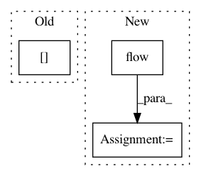

afef503d34919fb2febc0b475085f140e1a4e977,snntoolbox/io_utils/cifar10_load.py,,get_cifar10,#Any#Any#Any#,24
Before Change
if filename is None:
filename = ""
filepath = os.path.join(path, filename)
np.savez_compressed(filepath+"X_norm", X_train[::3].astype("float32"))
np.savez_compressed(filepath+"X_test", X_test.astype("float32"))
// np.savez_compressed(filepath+"Y_train", Y_train.astype("float32"))
np.savez_compressed(filepath+"Y_test", Y_test.astype("float32"))
After Change
testflow = datagen.flow(X_test, Y_test, batch_size=len(X_test))
X_test, Y_test = testflow.next()
normflow = datagen.flow(X_train, Y_train, batch_size=int(len(X_train)/3))
X_norm, Y_norm = normflow.next()
if flat:
X_norm = X_norm.reshape(X_norm.shape[0], np.prod(X_norm.shape[1:]))
In pattern: SUPERPATTERN
Frequency: 3
Non-data size: 3
Instances
Project Name: NeuromorphicProcessorProject/snn_toolbox
Commit Name: afef503d34919fb2febc0b475085f140e1a4e977
Time: 2016-08-31
Author: bodo.rueckauer@gmail.com
File Name: snntoolbox/io_utils/cifar10_load.py
Class Name:
Method Name: get_cifar10
Project Name: masa-su/pixyz
Commit Name: 9a244189f1fe351a4fc4ce47e928bd3b3163fa2e
Time: 2018-07-19
Author: masa@weblab.t.u-tokyo.ac.jp
File Name: Tars/distributions/real_nvp.py
Class Name: RealNVP
Method Name: forward
Project Name: stellargraph/stellargraph
Commit Name: d5adad4a667886e4790e2cfcf262952034b6f698
Time: 2018-09-10
Author: docherty@gmail.com
File Name: demos/node-classification/graphsage-cora-example.py
Class Name:
Method Name: test